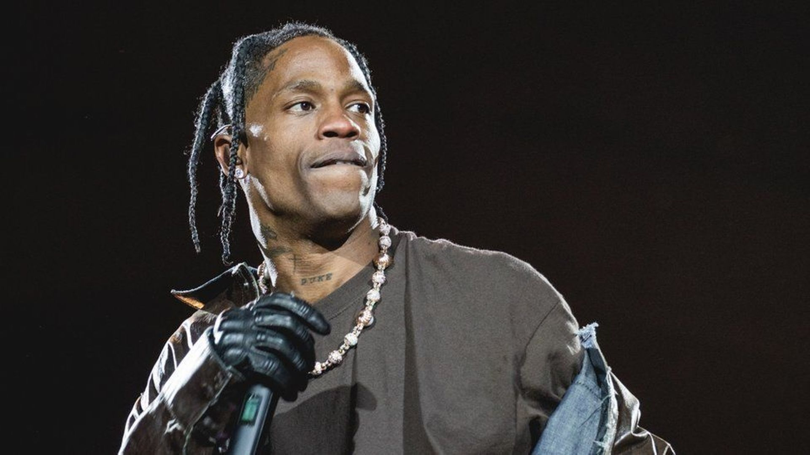
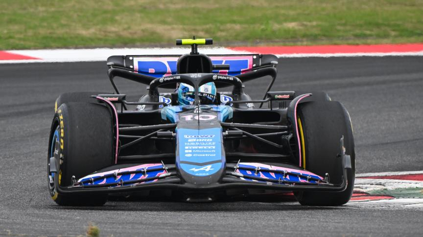
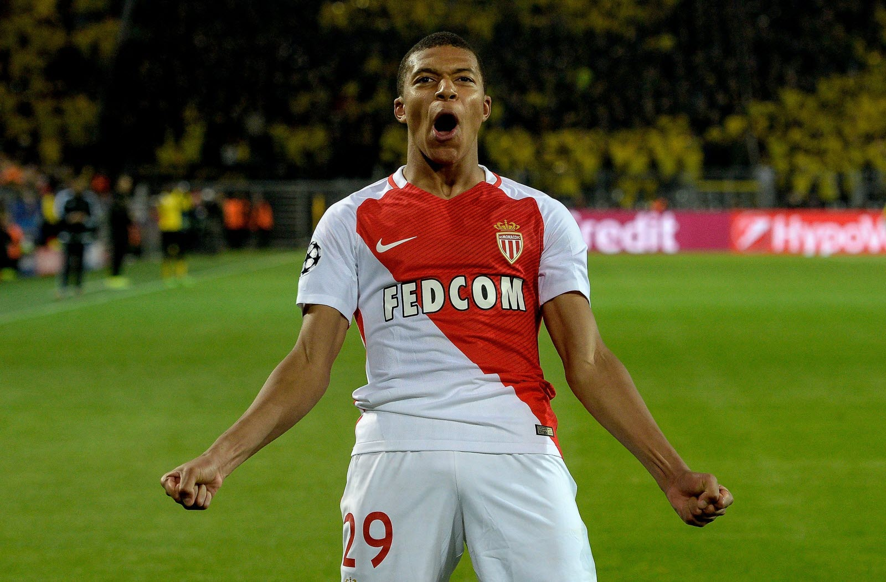

Musique
La musique est une source infinie d'inspiration et de créativité pour moi. J'aime explorer de nouveaux genres et artistes, et la musique fait partie intégrante de ma vie au quotidien. Mon rappeur du moment est Travis Scott.

Formule 1
La Formule 1 est bien plus qu'un simple sport pour moi. C'est un univers fascinant où la technologie de pointe se mêle à la passion et au talent des pilotes pour créer des moments de pure adrénaline. Mon pilote préféré est Gasly.

Football
Le football est un sport qui suscite en moi des émotions intenses et une véritable passion. Rien ne peut égaler l'excitation et le suspense d'un match de football. Mon club préféré est l'AS Monaco.